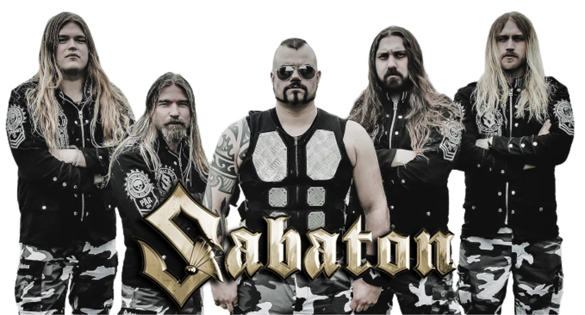

Sabaton
Sabaton é uma banda de power metal sueca, formada em 1999. O grupo é conhecido por ter letras com relação a guerras históricas.

Deseja saber mais sobre a banda? Clique aqui!
História da Banda
Em 1999, Joakim Brodén, Rickard Sundén, Oskar Montelius, Daniel Mÿhr, Daniel Mullback e Pär Sundström juntaram-se para formar a banda Sabaton. Após as primeiras gravações, várias gravadoras se interessaram pelo grupo, porém a Underground Symphony foi a escolhida. [carece de fontes] Em 2000, foi apresentado o CD promo Fist for Fight, que atualmente é uma compilação.
Integrantes
- Joakim Bróden (1999-PRESENTE) - Vocais e Teclados.
- Rickard Sundén (2012-2021) – Guitarras (Ex-integrante)
- Oskar Montelius (1999-2015) – Guitarras. (Ex-integrante)
- Pär Sundström (1999-PRESENTE) – Baixo.
- Daniel Mullback (2001-2012) – Bateria. (Ex-integrante)